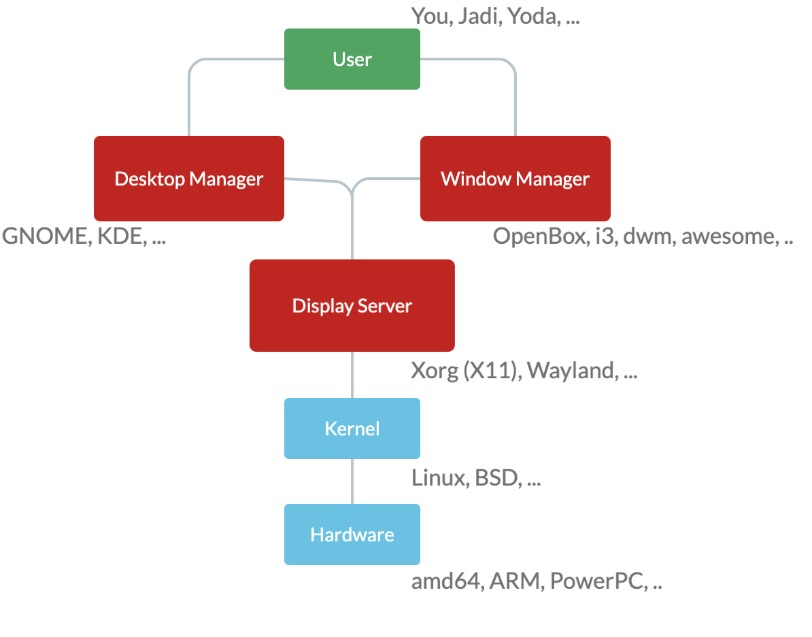

106.1 X11 را نصب و پیکربندی کنید
وزن: 2
داوطلبان باید بتوانند X11 را نصب و پیکربندی کنند.
حوزه های دانش کلیدی
- آشنایی با معماری X11.
- درک و دانش اولیه از فایل پیکربندی پنجره X.
- جنبه های خاصی از پیکربندی Xorg، مانند طرح صفحه کلید را بازنویسی کنید.
- اجزای محیط های دسکتاپ مانند مدیران نمایش و مدیران پنجره را درک کنید.
- دسترسی به سرور X را مدیریت کنید و برنامه های کاربردی را در سرورهای X از راه دور نمایش دهید.
- آگاهی از Wayland.
شرایط و امکانات:
/etc/X11/xorg.conf/etc/X11/xorg.conf.d/~/.xsession-errors- xhost
- xauth
- نمایش
- X
مقدمه
بسیاری از مردم ترجیح می دهند سیستم خود را از طریق یک رابط کاربری گرافیکی (یا به طور خلاصه GUI) هدایت کنند و از آن استفاده کنند. یک سیستم عامل مبتنی بر رابط کاربری گرافیکی، نمادها، ماوس، پنجره ها و پوشه ها را در اختیار کاربر قرار می دهد، استعاره ای از "رومیزی" روزانه ما. اما چگونه این اتفاق می افتد؟ مانند بسیاری از چیزهای دیگر در دنیای یونیکس، این امر از طریق لایههایی از برنامهها اتفاق میافتد که یک کار را به خوبی انجام میدهند. این یک نمایش تقریبی از این پشته است:

در سطح پایین تر، سخت افزار (مثلاً مانیتور شما) و سپس کرنل/هسته لینوکس و درایورهای آن را داریم. در بالای آن نرم افزاری به نام «Display Manager» یا «Display Server» وجود دارد. این برنامه می تواند از سیستم عامل (هسته) بخواهد که آنچه مدیر دسکتاپ درخواست می کند را انجام دهد. به عبارت دیگر، سرور نمایش خواسته های UI (حتی از طریق کانال شبکه) را می پذیرد و آنها را به زبانی که Kernel (و درایورهای موجود در آن) می فهمند، ترجمه می کند.
در این بخش بر روی X که یکی از دو سرور اصلی نمایشگر است تمرکز می کنیم و سپس نگاهی کوتاه به دیگری خواهیم داشت. مدرن ویلند.
X
X Window System یک سیستم پنجره شفاف شبکه است که بر روی طیف وسیعی از ماشین های محاسباتی و گرافیکی اجرا می شود. از جمله در اکثر توزیع های گنو/لینوکس زمانی که به یک رابط گرافیکی نیاز دارند. تاریخچه آن کمی طولانی است و با XFree86 شروع شد سپس X.org سرور X خود را راه اندازی کرد که امروزه X11 نامیده می شود.
پایین رفتن از سوراخ خرگوش، X Window System (یا X)، سیستم پنجره پیش فرض برای اکثر سیستم های مشابه یونیکس و یونیکس در طول دهه 1980 بود. سرور X.Org اجرای رایگان و منبع باز سرور نمایشگر سیستم پنجره X توسط بنیاد X.Org است. این روزها وقتی میگوییم X، به کل خانواده پروتکلهای شبکه اشاره میکنیم که نحوه تبادل پیامها بین یک کلاینت (برنامه) و سرور نمایشگر را توصیف میکنند. X11 یازدهمین نسخه آنهاست.
/etc/X11/xorg.conf
این قبلاً فایل پیکربندی اصلی X بود. در روزهای اخیر X هنگام شروع به کار خود را پیکربندی می کند و به فایل پیکربندی نیاز ندارد. اما اگر می خواهید تغییراتی در فرآیند بوت آپ ایجاد کنید، می توانید با اجرای دستور زیر یک فایل xorg.conf.new جدید ایجاد کنید:
Xorg -configure
و سپس آن را به /etc/X11/xorg.conf منتقل کنید. این فایل شامل بخش های مختلف می باشد. بیایید نگاهی به برخی از آنها بیندازیم.
Section "Files"
FontPath "/usr/share/X11/fonts/misc"
FontPath "/usr/share/X11/fonts/100dpi/:unscaled"
FontPath "/usr/share/X11/fonts/75dpi/:unscaled"
FontPath "/usr/share/X11/fonts/Type1"
FontPath "/usr/share/X11/fonts/100dpi"
FontPath "/usr/share/X11/fonts/75dpi"
FontPath "/var/lib/defoma/x-ttcidfont-conf.d/dirs/TrueType"
EndSection
این قسمت مربوط به فونت است. هنگامی که X-Server در حال اجرا است به این فایل ها نیاز دارد. FontPaths به X11 می گوید که فونت ها کجا هستند. همچنین می تواند به یک IP که یک سرور فونت را اجرا می کند اشاره کند که این روزها رایج نیست. سرورهای فونت قبلاً مسئول رندر کردن فونتها برای نمایش در کلاینتها بودند، اما امروزه رایانهها سریع هستند و میتوانند فونتهای خود را ارائه دهند. سرورهای فونت از مد افتاده اند!
Section "Module"
Load "bitmap"
Load "ddc"
Load "dri"
Load "extmod"
Load "freetype"
Load "glx"
Load "int10"
Load "type1"
Load "vbe"
Load "dbe"
EndSection
اینها ماژول هستند. به عنوان مثال glx از جلوه های گرافیک سه بعدی مراقبت می کند و ما از X می خواهیم که آن را در کنار دیگران بارگذاری کند.
اینها InputDeviceها هستند:
Section "InputDevice"
Identifier "Generic Keyboard"
Driver "kbd"
Option "CoreKeyboard"
Option "XkbRules" "xorg"
Option "XkbModel" "pc105"
Option "XkbLayout" "us"
EndSection
Section "InputDevice"
Identifier "Configured Mouse"
Driver "mouse"
Option "CorePointer"
Option "Device" "/dev/input/mice"
Option "Protocol" "ImPS/2"
Option "Emulate3Buttons" "true"
Option "ZAxisMapping" "4 5"
EndSection
Section "InputDevice"
Identifier "Synaptics Touchpad"
Driver "synaptics"
Option "SendCoreEvents" "true"
Option "Device" "/dev/psaux"
Option "Protocol" "auto-dev"
Option "RightEdge" "5000"
EndSection
همانطور که می بینید هر دستگاه دارای Identifier، Driver و مقداری options است. در بالا ماوس، کیبورد و تاچ پد را تعریف کردیم و نام هایی برای آنها گذاشتیم.
Section "Device"
Identifier "ATI Technologies, Inc. Radeon Mobility 7500 (M7 LW)"
Driver "radeon"
BusID "PCI:1:0:0"
Option "DynamicClocks" "on"
Option "CRT2HSync" "30-80"
Option "CRT2VRefresh" "59-75"
Option "MetaModes" "1024x768 800x600 640x480 1024x768+1280x1024"
EndSection
یک کارت گرافیک! باز هم دارای شناسه های (name)، درایورهای آن و برخی از گزینه ها (مانند وضوح پشتیبانی، نرخ تجدید، ...) است. این دستگاه به صفحه نمایش و مانیتور نیاز دارد:
توجه:
vesaبه درایور با وضوح پایین و همیشه کارآمد اشاره می کند. برای عیب یابی استفاده می شود.
Section "Monitor"
Identifier "Generic Monitor"
Option "DPMS"
EndSection
Section "Screen"
Identifier "Screen0"
Device "Screen0 ATI Technologies, Inc. Radeon Mobility 7500 (M7 LW)"
Monitor "Generic Monitor"
DefaultDepth 24
SubSection "Display"
Depth 1
Modes "1024x768"
EndSubSection
SubSection "Display"
Depth 4
Modes "1024x768"
EndSubSection
SubSection "Display"
Depth 8
Modes "1024x768"
EndSubSection
SubSection "Display"
Depth 15
Modes "1024x768"
EndSubSection
SubSection "Display"
Depth 16
Modes "1024x768"
EndSubSection
SubSection "Display"
Depth 24
Modes "1024x768"
EndSubSection
EndSection
توجه داشته باشید که چگونه صفحه نمایش از مانیتور تعریف شده (با استفاده از شناسه آن "Generic Monitor") و یک کارت گرافیک از قبل تعریف شده استفاده می کند. همچنین به حالتهای رنگی مختلف توجه کنید (مثلا 24bit 1024x768).
در پایان باید همه موارد بالا را به صورت ServerLayout در یک مکان بچسبانیم:
Section "ServerLayout"
Identifier "DefaultLayout"
Screen "Default Screen"
InputDevice "Generic Keyboard"
InputDevice "Configured Mouse"
InputDevice "Synaptics Touchpad"
EndSection
ما یک طرح با صفحه نمایش و 3 دستگاه ورودی داریم:)
توجه: نترسید. درک کلی از xorg.conf کافی است
/etc/X11/xorg.conf.d/
اگر /etc/program.conf را ویرایش کنید و سپس سیستم را بهروزرسانی کنید، چه اتفاقی میافتد؟ آیا سیستم program.conf شما را که به تازگی ویرایش کرده اید را با آخرین نسخه از فروشنده بازنویسی می کند؟ یا تغییرات در فروشنده را به نفع ویرایش های محلی خود حذف کنید؟ هر دو بد هستند.
برای حل این مشکل، بسیاری از برنامهها در حال ایجاد دایرکتوری (پوشه) تنظیمات جدید به نام /etc/program/program.conf.d/ هستند و از شما میخواهند تنظیمات محلی خود را در آنجا اضافه کنید. بنابراین فایل پیکربندی اصلی فروشنده /etc/program/program.conf خواهد بود و همه پیکربندیهای جدید شما به عنوان فایلهای جدا شده به /etc/program/program.conf.d/ میروند. مدیریت بسیار ساده تر (زیرا فایل های اتمی کوچکتر در هر پیکربندی) و بدون دست زدن به پیکربندی فروشندگان توسط افراد محلی. باحال؟ بله... در X11 هم این اتفاق می افتد. تنظیمات خود شما باید به /etc/X11/xorg.conf.d/ بروند و /etc/X11/xorg.conf باید دست نخورده باقی بماند.
~/.xsession-errors
در صورت بروز هرگونه مشکلی در هنگام شروع اجرای X، خطاها به اینجا خواهند رفت. بنابراین اگر در راه اندازی رابط کاربری گرافیکی خود با مشکلی مواجه شدید، این فایلی است که باید بررسی کنید تا ببینید چه مشکلی پیش آمده است.
xhost
این دستور دسترسی به سرور X را کنترل می کند. اگر روی سرور X هستید و xhost را اجرا می کنید، وضعیت دسترسی را به شما می گوید.
$ xhost
access control enabled, only authorized clients can connect
SI:localuser:jadi
همانطور که می بینید فقط مشتریان مجاز می توانند متصل شوند. برای باز کردن آن برای همه:
jadi@funlife:~$ xhost +
access control disabled, clients can connect from any host
و برای بستن دوباره:
jadi@funlife:~$ xhost -
access control enabled, only authorized clients can connect
یا آن را فقط برای یک IP خاص باز کنید:
jadi@funlife:~$ xhost +192.168.42.85
192.168.42.85 being added to access control list
jadi@funlife:~$ xhost
access control enabled, only authorized clients can connect
INET:192.168.42.85 (no nameserver response within 5 seconds)
SI:localuser:jadi
اکنون دستگاه 192.168.42.85 (REMOTE) می تواند درخواست های گرافیکی خود را به این دستگاه ارسال کند. چه استفاده ای دارد به خواندن بخش بعدی ادامه دهید (با فرض اینکه این دستگاه 192.168.42.80 (SERVER) نامیده می شود و ما دسترسی از به X11 آن را برای 192.168.42.85 (REMOTE) باز کردیم).
نمایش
این متغیر به برنامه های گرافیکی می گوید که خروجی گرافیکی خود را کجا ارسال کنند. این پیش فرض است:
$ echo $DISPLAY
:0
بنابراین اگر من هر برنامه گرافیکی را روی دستگاه خود اجرا کنم، خروجی آن روی همان دستگاه نمایش داده می شود.
اما اجازه دهید آن را به دستگاه 192.168.42.80 (SERVER) تغییر دهیم. اگر به خاطر دارید ما به آن گفتیم که این دستگاه (REMOTE) می تواند به آن متصل شود.
$ export DISPLAY=192.168.42.80:0
$ xeyes # the eyes will be shown on 192.168.42.80 machine
باحال؟ بله اما این ممکن است در تنظیمات شما مشکلی ایجاد نکند. X به دلیل نگرانی های امنیتی در اکثر توزیع ها به اتصال از راه دور گوش نمی دهد.
در فصل بعد، خواهیم دید که چگونه می توانید برنامه های گرافیکی را به درستی بر روی سرورهای راه دور اجرا کنید و قسمت GUI را در کنار خود دریافت کنید.
xauth
برنامه xauth برای ویرایش و نمایش اطلاعات مجوز مورد استفاده در اتصال به سرور X استفاده می شود. در xhost میبینید که چگونه میتوانید X خود را به IPهای راه دور باز کنید، با استفاده از xauth میتوانید همین کار را بر اساس یک «راز» مشترک انجام دهید.
در این روش، X یک فایل .XAuthority در خانه شما ایجاد می کند و هرکس از محتویات آن اطلاع دارد، می تواند با X تماس بگیرد.
اگر
Xشما کار نمی کند، ممکن است یک مرحلهrm``.XAuthorityکردن فایل.XAuthorityو راه اندازی مجدد X باشد.
ویلند
X11 فوق العاده قدیمی است و فقط از طریق تعداد زیادی پچ و هک قابل استفاده است. به همین دلیل یکی از توسعه دهندگان آن یک مدیر نمایشگر مدرن به نام Wayland راه اندازی کرد. در سالهای اخیر، بسیاری از توزیعها از پیشفرض X11 به Wayland تغییر میکنند و X11 را بهعنوان یک گزینه ایمن نگه میدارند. Wayland امن تر است و نگهداری از آن بسیار آسان تر است و من می توانم به شما اطمینان دهم که در چند سال آینده ما بیشتر و بیشتر از آن خواهیم دید.